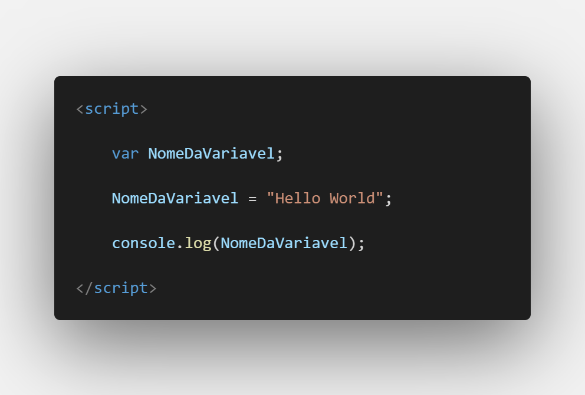
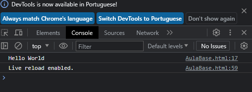

Aula 4/26 - Variáveis
Uma variável em programação é como uma caixa que você usa para guardar informações. Ela tem um nome e pode conter diferentes tipos de dados, como números, palavras, ou valores verdadeiro/falso. As variáveis ajudam você a armazenar e manipular dados de forma mais organizada em seu código.
Segue o exemplo:


- Armazenamento: Você pode guardar dados em variáveis para usar mais tarde.
- Manipulação: Você pode fazer cálculos, concatenar strings e modificar dados usando variáveis.
- Reutilização: Em vez de repetir um valor várias vezes, você pode usar uma variável para tornar o código mais conciso.
- Flexibilidade: Você pode alterar o valor de uma variável facilmente, sem precisar buscar por todas as ocorrências do valor no código.
Dominar o uso de variáveis é fundamental para programar, pois elas formam a base para a criação de programas mais complexos e eficientes.